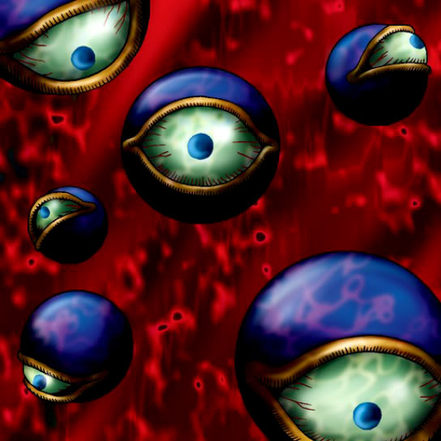

Monster Eye

Description: "When turned face-up, flips the last card played by an opponent face-up."
STATS
ATK: 250
DEF: 350DECK COST
Deck Cost per Card: 11EFFECT NOT IMPLEMENTED
Fusion List (8 Possible Fusions)
- Monster Eye + Abyss Flower = Rose Spectre of Dunn
- Monster Eye + Clown Zombie = Armored Zombie
- Monster Eye + Dark Plant = Rose Spectre of Dunn
- Monster Eye + Fungi of the Musk = Darkworld Thorns
- Monster Eye + Monster Eye = Darkworld Thorns
- Monster Eye + Queen of Autumn Leaves = Rose Spectre of Dunn
- Monster Eye + Rainbow Flower = Rose Spectre of Dunn
- Monster Eye + Yashinoki = Rose Spectre of Dunn